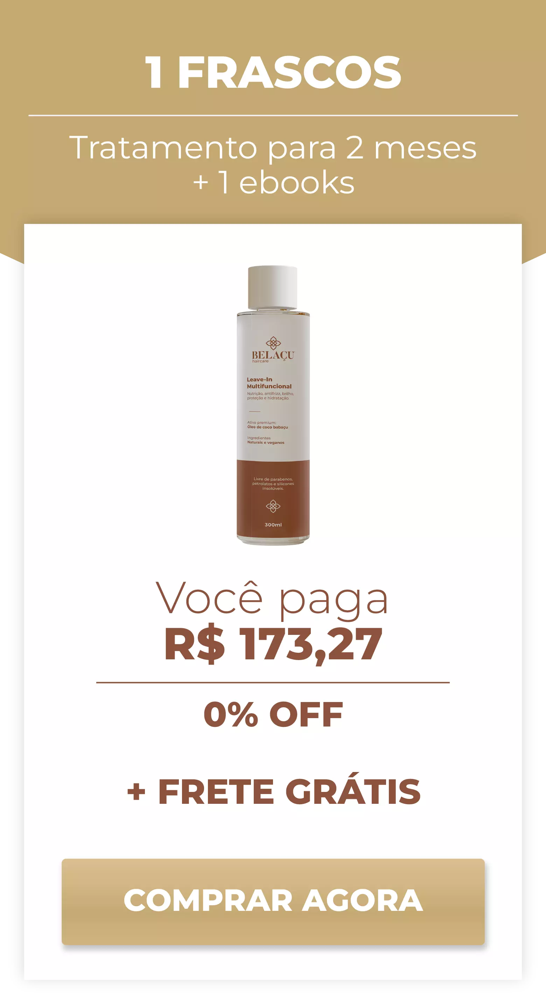
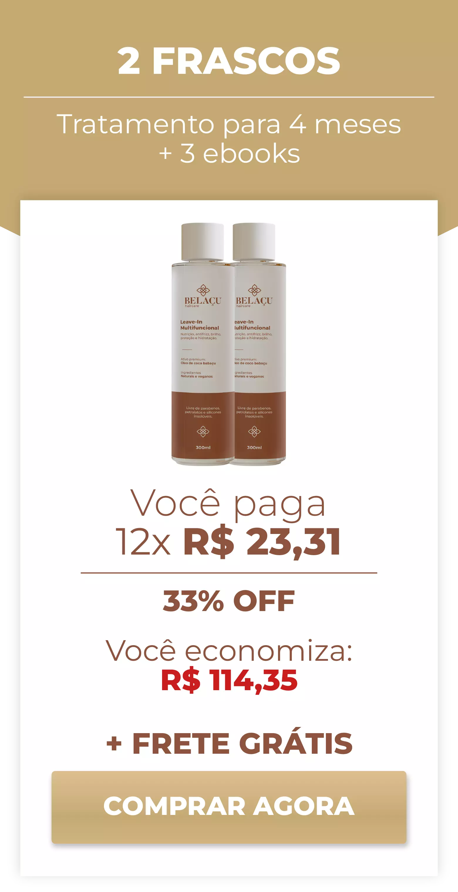

Leave-In Multifuncional

Hidrata e nutri até mesmo um cabelo que não absorve mais como deveria. Previne quase toda a perda de queratina e força os fios absorverem.
Experimente Agora
Hidrata e nutri até mesmo um cabelo que não absorve mais como deveria. Previne quase toda a perda de queratina e força os fios absorverem.
Experimente AgoraO leave-in Multifuncional da Belaçu foi aprovado pela ANVISA, comprovando a sua efetividade e segurança.
Porque 99% dos produtos capilares só tentam remediar seu problema. Deixa eu te explicar: eles até repõem nutrientes e queratina aos fios, mas aí vem o meio ambiente e destrói tudo. E aí você tem que ficar repondo para perder de novo e de novo. Tratando sempre o problema e não causa dele. Seu cabelo pode até melhorar, mas apenas temporariamente.
Já o Leave-in Multifuncional da Belaçu é diferente. Ele é o primeiro produto do Brasil que não tenta apenas repor nutrientes e queratina, mas também previne que você perca eles para o meio ambiente ou para qualquer outro tipo de causa de danos. Tratando a causa do problema e não apenas o problema. E como seu cabelo não irá mais sofrer grande perca como antes, ele não vai ter escolha se não absorver cada nutriente. Por isso esse Leave-In pode hidratar e nutrir até mesmo um cabelo que não absorve mais como deveria.
E tem mais: ao contrário dos outros produtos que prometem milagres, mas não garantem nada, o Leave-in da Belaçu vem com uma garantia incondicional de resultados. Ou funciona para você, ou devolvemos cada centavo que você pagou. Sem perguntas, sem burocracias, e sem complicações.
Nós podemos te dar essa garantia incrível por um simples motivo: o nosso Leave-in Multifuncional funciona. Ele foi aprovado pela ANVISA e já são dezenas de milhares de brasileiras que não vivem mais sem ele. Além disso, o quanto é cansativo produtos que prometem milagres e não funcionam. Mas com a Belaçu não há com o que se preocupar: a nossa garantia protege nossas clientes contra qualquer risco. Por isso, faça seu pedido agora e teste o produto. Não há o que perder e tudo a ganhar. Afinal, se nosso produto não funcionasse, a nossa garantia ia falir a nossa empresa rapidinho... não é mesmo?
O óleo de coco do tipo babaçu por se tratar de um óleo natural, ele serve como um emoliente altamente nutritivo, devolvendo de forma natural a hidratação que os fios perdem com o dia a dia, seja pela ação da poluição, sol ou uso excessivo de ferramentas de calor, como chapinha, babyliss e secador.
O ácido hialurônico do Leave-In Multifuncional da Belaçu vai reparar e preencher qualquer tipo de dano desde o fio ao couro cabeludo. Promovendo saúde e prevenindo a quebra.
A vitamina do tipo B5 vai aumentar o corpo do fio, a elasticidade e o brilho, proporcionando ao seu cabelo aquela aparência jovem. Você perceberá a simples sensação de como é ter uma autoestima alta novamente, ao se olhar no espelho. Você perceberá que em vez de parecer ter sua idade, você pode parecer ainda mais jovem e atraente!
O Leave-In Multifuncional da Belaçu age nos cabelos fechando as cutículas da fibra e servindo como uma espécie de película de proteção para os fios. Desta forma, a umidade do ambiente, assim como a ação dos radicais livres, não consegue penetrar nas partes mais internas dos fios, evitando o tão temido frizz e controlando o efeito armado e de fios rebeldes até mesmo nos dias em que o tempo está mais úmido.
O ácido láurico presente no óleo de coco babaçu previne quase toda a perda de queratina de um cabelo. Ou seja, previne a causa número um responsável por tornar seu cabelo incapaz de absorver nutrientes como deveria. Sendo assim, seu cabelo não tem outra escolha além de voltar absorver como antes.

Quantos produtos você já comprou que não deram resultado? Pois é.
Na Belaçu é diferente: ou você fica maravilhada com os seus resultados... ou nós não deixamos você ficar com o produto, e vamos comprar todos os potes de você, pelo mesmo valor que você pagou!
Basta você mandar um e-mail para contato@belacu.com.br ou entrar em contato com a nossa equipe pelo WhatsApp que você terá acesso automaticamente após a compra ser efetuada.
Depois, diga que você quer usar a sua Garantia Blindada Belaçu, e nós vamos te devolver 100% do seu dinheiro. Sem perguntas, sem burocracias, sem complicações.
Essa garantia vale por 30 dias inteiros. Como o produto te dá resultados na hora, isso é mais do que suficiente para você decidir se quer ou não ficar com ele.
E se por um milagre você não gostar de qualquer coisa, até mesmo da cor do produto...é só nós mandar um e-mail. Esse é o nosso compromisso com você.
Por isso, faça seu pedido agora. Você não tem absolutamente NADA a perder, e tudo a ganhar.
Recomendamos o tratamento de 4 a 6 meses para efeito total e duradouro
 O estoque mais vendido e o mais recomendado é para 6 meses, porque apesar de você ter resultados imediatos com o Leave-In Multifuncional, os maiores benefícios vêm com o uso contínuo do produto. Além disso, você paga por 2 e leva 3. Você economiza R$ 173,27 quando você faz um estoque para 6 meses e ainda se protege contra a falta de estoque da nossa parte.
Sim, 100% natural, vegano e livre de testes em animais.
Sim. Livre de parabenos, petrolatos, silicones insolúveis e outros. Sua saúde está protegida ao usar nosso produto!
São diversas! 1. Você pode borrifa-lo com o cabelo seco, desde que esteja limpo. 2. Como um finalizador sem enxágue pós banho. 3. Como protetor térmico. 4. Como condicionador no banho, nesse caso precisando enxaguar. 5. Como protetor contra o meio ambiente e raios solares. Promovendo brilho, elasticidade, modelagem, sem frizz, reparação, hidratação e nutrição em qualquer uma dessas utilidades já na primeira aplicação.
Sim! O Leave-In Multifuncional é feito com compostos que têm efeitos no curto e no longo prazo, funcionando em qualquer tipo de cabelo.
Cada frasco contém 300 ml, o suficiente para dois meses de tratamento.
O prazo médio de entrega para o Brasil é de até 10 dias úteis. O produto só é enviado após a confirmação do seu pagamento pela administradora do seu cartão de crédito ou após a confirmação do pagamento do boleto.
Adquira o produto hoje e seja protegido automaticamente pela Garantia Blindada Belaçu, onde você tem 30 dias para testar nosso produto sem risco algum. Se por algum motivo, dentro do prazo de 30 dias, você achar que seu investimento não valeu a pena, nós não vamos deixar você ficar com o produto. Apenas nos avise por e-mail (contato@diatena.com.br) ou WhatsApp que nós compraremos os frascos de volta de você! Se até um frasco estiver violado ou vazio, pagaremos pra você o mesmo preço que você pagou por eles cheios, sem perguntas e sem complicações.
Sim! Ele é aprovado pela ANVISA, comprovando a sua efetividade e segurança.